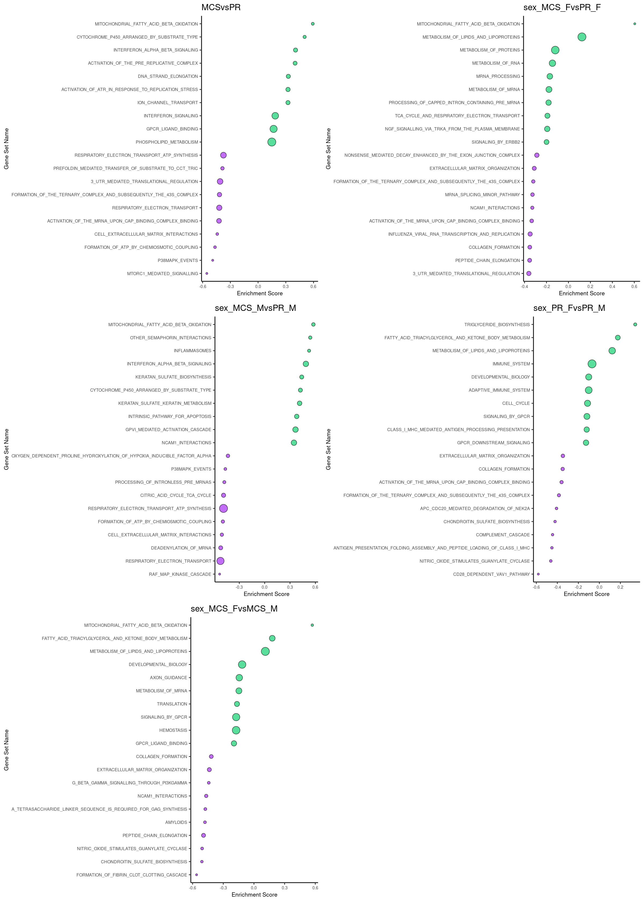

Last updated: 2021-02-15
Checks: 7 0
Knit directory: Mouse_AAV_PGR_RNAseq_bulk/
This reproducible R Markdown analysis was created with workflowr (version 1.6.2). The Checks tab describes the reproducibility checks that were applied when the results were created. The Past versions tab lists the development history.
Great! Since the R Markdown file has been committed to the Git repository, you know the exact version of the code that produced these results.
Great job! The global environment was empty. Objects defined in the global environment can affect the analysis in your R Markdown file in unknown ways. For reproduciblity it’s best to always run the code in an empty environment.
The command set.seed(20210215) was run prior to running the code in the R Markdown file. Setting a seed ensures that any results that rely on randomness, e.g. subsampling or permutations, are reproducible.
Great job! Recording the operating system, R version, and package versions is critical for reproducibility.
Nice! There were no cached chunks for this analysis, so you can be confident that you successfully produced the results during this run.
Great job! Using relative paths to the files within your workflowr project makes it easier to run your code on other machines.
Great! You are using Git for version control. Tracking code development and connecting the code version to the results is critical for reproducibility.
The results in this page were generated with repository version 2725f5e. See the Past versions tab to see a history of the changes made to the R Markdown and HTML files.
Note that you need to be careful to ensure that all relevant files for the analysis have been committed to Git prior to generating the results (you can use wflow_publish or wflow_git_commit). workflowr only checks the R Markdown file, but you know if there are other scripts or data files that it depends on. Below is the status of the Git repository when the results were generated:
Ignored files:
Ignored: .Rproj.user/
Untracked files:
Untracked: Mus_musculus.GRCm38.96.fulllength.saf
Untracked: analysis/00.WorkFlowR_setting.R
Untracked: header.sam
Untracked: header.txt
Untracked: logCPM_mrna_fulllen_pe_strrev_q30.mx.AAV_PR.fix_filt.csv
Untracked: output/2020021_AAV_PR_RNA_samplesheet.txt
Untracked: output/mrna_fulllen_pe_strrev_q30.mx.AAV_PR.fix_filt
Untracked: output/mrna_fulllen_pe_strrev_q30.mx.AAV_PR.unfiltered
Untracked: output/mrna_fulllen_pe_strrev_q30.mx.chr
Untracked: output/pheno.matrix_allsample.txt
Unstaged changes:
Deleted: analysis/01.Generate_reference_genome
Note that any generated files, e.g. HTML, png, CSS, etc., are not included in this status report because it is ok for generated content to have uncommitted changes.
These are the previous versions of the repository in which changes were made to the R Markdown (analysis/06.GSEA.Rmd) and HTML (docs/06.GSEA.html) files. If you’ve configured a remote Git repository (see ?wflow_git_remote), click on the hyperlinks in the table below to view the files as they were in that past version.
| File | Version | Author | Date | Message |
|---|---|---|---|---|
| Rmd | 2725f5e | evangelynsim | 2021-02-15 | wflow_publish(c(“analysis/01.Generate_reference_genome.Rmd”, |
Following generation of the edgeR spreadsheet, use the following bash script to rank the genes before subjected them to GSEA using bash scripts.
library(ggplot2)
library(grid)
library(gridExtra)
library(cowplot)
********************************************************Note: As of version 1.0.0, cowplot does not change the default ggplot2 theme anymore. To recover the previous behavior, execute:
theme_set(theme_cowplot())********************************************************library(ggpubr)
Attaching package: 'ggpubr'The following object is masked from 'package:cowplot':
get_legendlibrary(dplyr)
Attaching package: 'dplyr'The following object is masked from 'package:gridExtra':
combineThe following objects are masked from 'package:stats':
filter, lagThe following objects are masked from 'package:base':
intersect, setdiff, setequal, unionFollowing generated edgeR spreadsheet, use the logFC and p.Value to generate a rank score using the following scripts.
rnkgenM2H.sh
#!/bin/bash
#Specify the input file
XLS=$1
#Specify the gene ID column
ID=$2
#Specify the fold change value column
FC=$3
#Specify the raw p-value column
P=$4
#Specify ortholog maping
ORTH=$5
RNK=${XLS}.rnk
HUM=${RNK}.hum.rnk
sed 1d $XLS | tr -d '"' \
| awk -v I=$ID -v F=$FC -v P=$P '{FS="\t"} {print $I, $F, $P}' \
| awk '$2!="NA" && $3!="NA"' \
| awk '{s=1} $2<0{s=-1} {print $1"\t"s*-1*log($3)/log(10)}' \
| sort -k2gr | sed 's/inf$/330/'> $RNK
sed 's/_/\t/' $RNK \
| sort -k 1b,1 \
| join -1 2 -2 1 $ORTH - \
| awk '{OFS="\t"} {print $0,$5*$5}' \
| sort -k6gr \
| awk '!arr[$4]++' \
| awk '{OFS="\t"} !arr[$3]++ {print $3,$5}' \
| sort -k2gr > $HUMRun rnkgenM2H.sh to generate .rnk files
#!/bin/bash
for XLS in *xls ; do
./rnkgen.sh $XLS 1 2 5 mouse2human.txt.sort 1 2 3 ;
doneSubject the generated .rnk files along with .gmt file sand run the following scripts to perform gene set enrichment analysis.
Download gmt files from GSEA webpage http://www.gsea-msigdb.org/gsea/login.jsp;jsessionid=C4D3892651A8792A331D7B32E9D2269C
rungsea.sh
#!/bin/bash
run_gsea(){
RNK=$1
GMT=$2
echo /group/card2/Evangelyn_Sim/NGS/app/gsea-3.0.jar $RNK $GMT
java -Xmx4096m -cp /group/card2/Evangelyn_Sim/NGS/app/gsea-3.0.jar xtools.gsea.GseaPreranked \
-gmx $GMT -collapse false -mode Max_probe \
-norm meandiv -nperm 1000 -rnk $RNK -scoring_scheme classic \
-rpt_label ${RNK}.${GMT} -include_only_symbols true -make_sets true \
-plot_top_x 20 -rnd_seed timestamp -set_max 5000 -set_min 10 -zip_report false \
-out . -gui false
}
export -f run_gsea
parallel -j5 run_gsea ::: *rnk ::: *gmt#!/bin/bash
echo 'GeneSetName GeneSetSize ES NES p-val FDR FWER' > header.txt
for GSEADIR in `ls | grep GseaPreranked | grep -v xls$` ; do
awk '{FS="\t"} {OFS="\t"} $8<0.05 {print $1,$4,$5,$6,$7,$8,$9} ' $GSEADIR/gsea_report_for_na_*xls \
| cat header.txt - > $GSEADIR.xls
done
files = list.files(path = "/group/card2/Evangelyn_Sim/Transcriptome_chromatin_human/Sequencing_ATAC_RNA/20191204_mRNAseq_AAV/R/5.gsea/forpaper", pattern = ".*reactome.xls", full.names = T)
mx = lapply(files, read.delim, header=T)
for(i in 1:length(mx)){
mx[[i]]$GeneSetName = gsub("REACTOME_", "", mx[[i]]$GeneSetName)
mx[[i]]$GeneSetName = gsub("RESPIRATORY_ELECTRON_TRANSPORT_ATP_SYNTHESIS_BY_CHEMIOSMOTIC_COUPLING_AND_HEAT_PRODUCTION_BY_UNCOUPLING_PROTEINS_",
"RESPIRATORY_ELECTRON_TRANSPORT_ATP_SYNTHESIS", mx[[i]]$GeneSetName)
mx[[i]]$GeneSetName = gsub("NEF_MEDIATES_DOWN_MODULATION_OF_CELL_SURFACE_RECEPTORS_BY_RECRUITING_THEM_TO_CLATHRIN_ADAPTERS",
"NEF_MEDIATES_DOWN_MODULATION_OF_CELL_SURFACE_RECEPTORS", mx[[i]]$GeneSetName)
mx[[i]]$GeneSetName = gsub("ACTIVATION_OF_THE_MRNA_UPON_BINDING_OF_THE_CAP_BINDING_COMPLEX_AND_EIFS_AND_SUBSEQUENT_BINDING_TO_43S",
"ACTIVATION_OF_THE_MRNA_UPON_CAP_BINDING_COMPLEX_BINDING", mx[[i]]$GeneSetName)
mxRU= mx[[i]]
mxRU= mxRU[order(mxRU$ES, decreasing = T), ]
mxRU= mxRU[c(1:10),]
mxRU= mxRU[order(mxRU$ES), ]
mxRU$colour = "springgreen3"
mxRU$GeneSetName = factor(mxRU$GeneSetName, levels = mxRU$GeneSetName)
mxRD= mx[[i]]
mxRD= mxRD[order(mxRD$ES), ]
mxRD= mxRD[c(1:10),]
mxRD$colour = "purple"
mxRD$GeneSetName = factor(mxRD$GeneSetName, levels = mxRD$GeneSetName)
ES_all = rbind(mxRD, mxRU)
mx[[i]] = ggplot(ES_all, aes(y=GeneSetName, x=ES))+
geom_point(stat = 'identity', alpha=0.65, shape= 21, color="black", fill=ES_all$colour, aes(size=GeneSetSize))+
scale_size_continuous(range = c(1,5))+
theme_classic()+
labs(title = gsub("/group/card2/Evangelyn_Sim/Transcriptome_chromatin_human/Sequencing_ATAC_RNA/20191204_mRNAseq_AAV/R/5.gsea/forpaper/edgeR_RNA_all_|.hum.rnk|.c2.cp.reactome.xls","",files[[i]]), x="Enrichment Score", y="Gene Set Name")+
theme(plot.title = element_text(size = 12))+
theme(axis.text = element_text(size = 6))+
theme(axis.title = element_text(size = 8))+
theme(legend.text = element_text(size = 6))+
theme(legend.title = element_text(size = 8))+
theme(legend.position = "none")
} multi = arrangeGrob(mx[[1]],mx[[3]],
mx[[4]],mx[[5]],
mx[[2]],
ncol = 2, nrow = 3)
plot = as_ggplot(multi)
plot
sessionInfo()R version 3.6.1 (2019-07-05)
Platform: x86_64-pc-linux-gnu (64-bit)
Running under: CentOS Linux 7 (Core)
Matrix products: default
BLAS: /hpc/software/installed/R/3.6.1/lib64/R/lib/libRblas.so
LAPACK: /hpc/software/installed/R/3.6.1/lib64/R/lib/libRlapack.so
locale:
[1] LC_CTYPE=en_US.UTF-8 LC_NUMERIC=C
[3] LC_TIME=en_US.UTF-8 LC_COLLATE=en_US.UTF-8
[5] LC_MONETARY=en_US.UTF-8 LC_MESSAGES=en_US.UTF-8
[7] LC_PAPER=en_US.UTF-8 LC_NAME=C
[9] LC_ADDRESS=C LC_TELEPHONE=C
[11] LC_MEASUREMENT=en_US.UTF-8 LC_IDENTIFICATION=C
attached base packages:
[1] grid stats graphics grDevices utils datasets methods
[8] base
other attached packages:
[1] dplyr_1.0.2 ggpubr_0.4.0 cowplot_1.0.0 gridExtra_2.3
[5] ggplot2_3.3.2 workflowr_1.6.2
loaded via a namespace (and not attached):
[1] tidyselect_1.1.0 xfun_0.18 purrr_0.3.4 haven_2.3.1
[5] carData_3.0-4 colorspace_1.4-1 vctrs_0.3.2 generics_0.1.0
[9] htmltools_0.5.0 yaml_2.2.1 rlang_0.4.7 later_1.1.0.1
[13] pillar_1.4.6 foreign_0.8-71 glue_1.4.2 withr_2.3.0
[17] readxl_1.3.1 lifecycle_0.2.0 stringr_1.4.0 cellranger_1.1.0
[21] munsell_0.5.0 ggsignif_0.6.0 gtable_0.3.0 zip_2.1.1
[25] evaluate_0.14 labeling_0.4.2 knitr_1.30 rio_0.5.16
[29] forcats_0.5.0 httpuv_1.5.4 curl_4.3 broom_0.7.0
[33] Rcpp_1.0.5 promises_1.1.1 scales_1.1.1 backports_1.1.10
[37] abind_1.4-5 farver_2.0.3 fs_1.5.0 hms_0.5.3
[41] digest_0.6.27 stringi_1.5.3 openxlsx_4.2.3 rstatix_0.6.0
[45] rprojroot_1.3-2 tools_3.6.1 magrittr_1.5 tibble_3.0.3
[49] crayon_1.3.4 whisker_0.4 tidyr_1.1.2 car_3.0-10
[53] pkgconfig_2.0.3 ellipsis_0.3.1 data.table_1.13.2 rmarkdown_2.5
[57] rstudioapi_0.11 R6_2.5.0 git2r_0.27.1 compiler_3.6.1